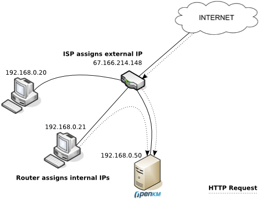
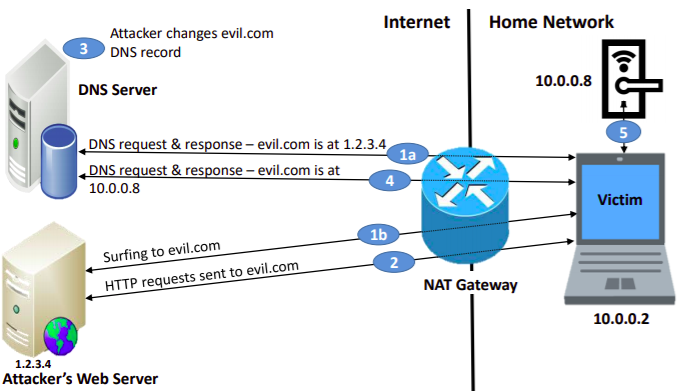
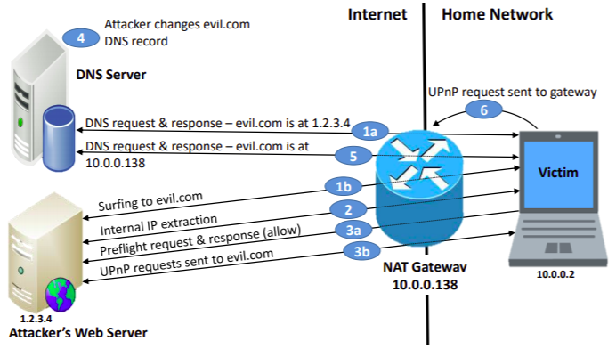
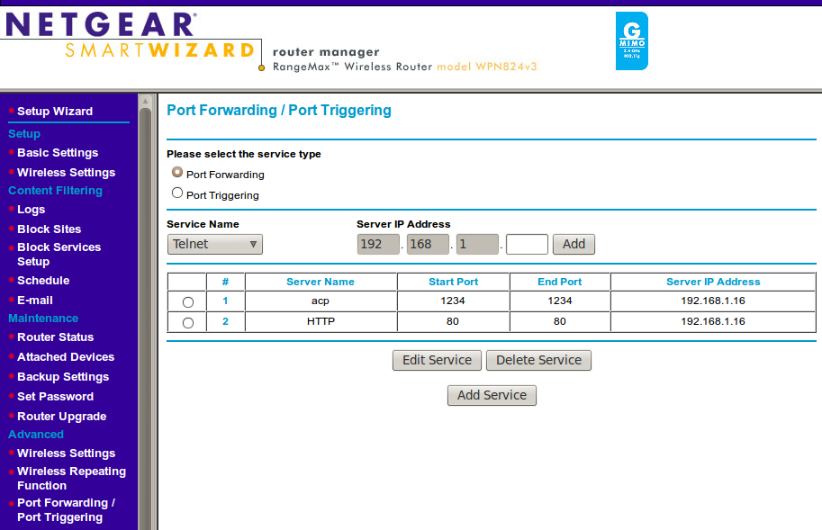
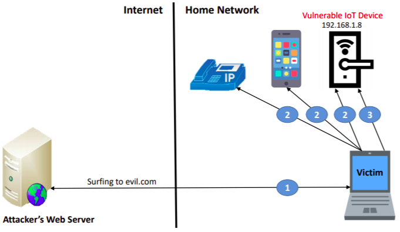
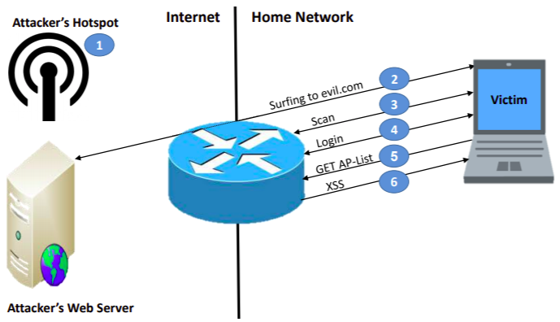
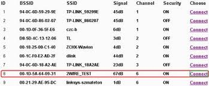
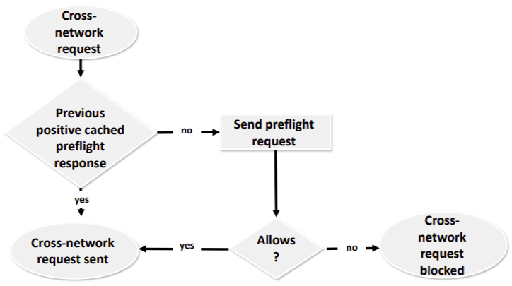
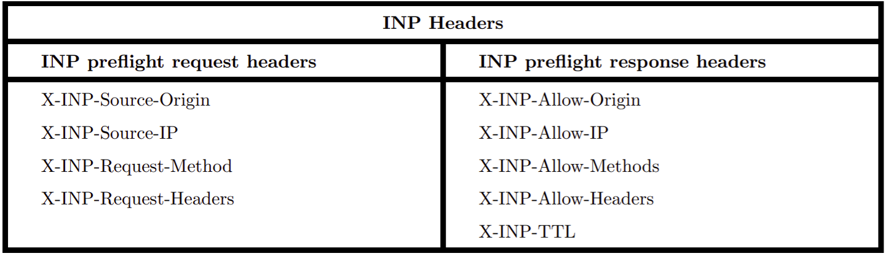

Eradicating Attacks on the Internal Network with Internal Network Policy
Y. Afek, A. Bremler-Barr, A. Noy, arXiv:1910.00975, 2019
Speaker: Hsiao-Te Hu
Introduction
Traditional Internal Network Attack & Defence
Internal Network
A network that uses private IP address space.

Internal Network Defense
Same Origin Policy (SOP)
- An origin is defined as a combination of
URI scheme,
host name, and
port number.
- A web browser permits scripts contained in one web page to access data in a second web
page only if both web pages have the
same origin.
- Otherwise, SOP prevents the scripts from
reading the response.
SOP Example
http://domain-a.com/index.html
| URL |
Outcome |
Reason |
| http://domain-a.com/layout.css |
Same origin |
|
| http://domain-a.com/image.png |
Same origin |
|
| https://domain-a.com/script.js |
Failure |
Different protocol |
| http://domain-a.com:8080/script.js |
Failure |
Different port |
| http://domain-b.com/script.js |
Failure |
Different host |
Related Work
Attacks on IoT behind NAT
Acar et al. attack on IoTs
DNS Rebinding, allow the attack to extract information from or send commands to the device.

Acar et al. attack on IoTs
- The victim surfs to the attacker's website evil.com
- The malicious script repeatedly sends GET requests to
http://evil.com/evil-test.
- Attacker changes the evil.com DNS record.
- DNS Rebinding is completed
- Local device is accessed by the attacker.
Three additional Attacks
Each circumventing SOP in a different way.
Attack I: Attacking home routers with DNS Rebinding & UPnP
The attacker can directly access the home network

Attack I Cont.
A router's UPnP server supports HTTP requests which contain commands, such as
add a port forwarding rule or
changing the DNS server.

Attack II: Attacking internal devices without DNS Rebinding
The attacker can remotely control IoT by their
web management API or exploit IoT vulnerabilities

Attack III: Attacking home routers through static HTML elements

Attack III Cont.
- The attacker sets up an access point, with network name (SSID):
- The victim surfs to the attacker's controlled web-site, evil.com
- The malicious HTML identifies the victim's router
- The attacker makes a login request using an HTML form to the home router.
- The attacker's redirects the victim to the AP List panel page.
- The XSS is invoked

Internal Network Policy (INP)
Strong restrictions on web browser accesses to an internal network device
from an external web page
INP Process

A cross-network request is an HTTP request that is
initiated by an external web page to an internal resource.
INP preflight request / response

- X-INP-Source-Origin: http://domain-a.com/index.html
- X-INP-Source-IP: 1.2.3.4
- X-INP-Request-Method: GET
- X-INP-Source-Headers:
## Attack II
* target IoT
* Yamaha Network AV Receiver
* Sony Smart TV
* Web management API
* POST http://xxx.xxx.xxx.xxx/YamahaRemoteControl/ctrl
* POST http://xxx.xxx.xxx.xxx/sony/IRCC
* Commands
* Power Off, Volume Control, Display Control
## Testing INP
* PoC source code
* no noticeable overhead
* extraction of the HTTP headers
* string comparsion